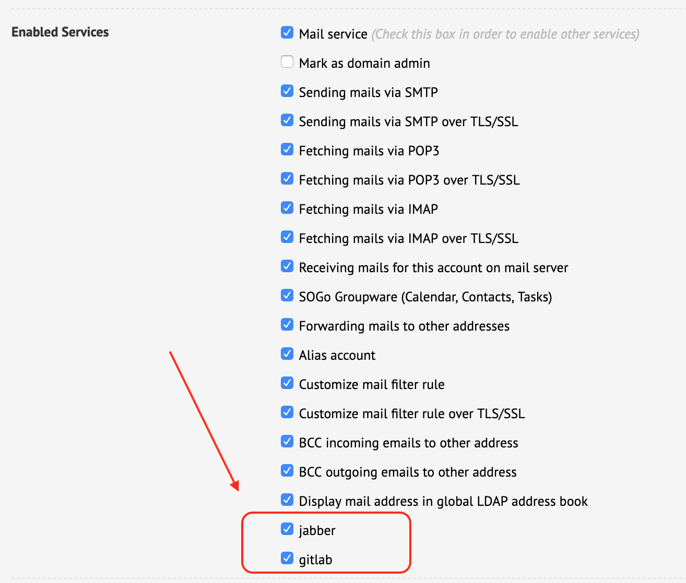

It's reasonable that you want to use OpenLDAP server running on iRedMail server as a central identity management database. If you have other software/services, and need to restrict some users to use these software/services, the easiest and most elegent soluion is adding extra service name in LDAP database, and update your software to use a proper LDAP filter to query users.
We assume you have a GitLab server and Jabber (XMPP) server running on internal
servers, and allow different users to use them.
In this tutorial, we use service name gitlab for GitLab service, and jabber
for Jabber.
With iRedAdmin-Pro, please open its config file
/opt/www/iredadmin/settings.py
, add a new parameter ADDITIONAL_ENABLED_USER_SERVICES like
below:
Attention
/opt/iredmail/custom/iredadmin/settings.py
instead.ADDITIONAL_ENABLED_USER_SERVICES = ['gitlab', 'jabber']
Then restart iredadmin service.
Newly created mail user will have these 2 services enabled by default, but for existing users, you have to add them either manually or do it with some scripting/programming.
You can find these 2 custom service names after logged in to iRedAdmin-Pro,
in user profile page, under tab Advanced. Screenshot attached.

In OpenLDAP, mail user with these 2 services enabled will have 2 new LDAP attribute/value pairs:
enabledService=gitlab
enabledService=jabber
For GitLab, the LDAP filter used to query user should look like this:
(&(objectClass=mailUser)(accountStatus=active)(enabledService=gitlab))
For Jabber, the LDAP filter used to query user should look like this:
(&(objectClass=mailUser)(accountStatus=active)(enabledService=jabber))